Gastronomie locale
Découvrez les mets traditionnels de la ville de Bobo Dioulasso.
 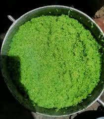
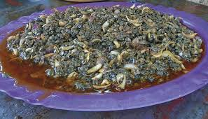
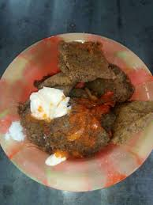
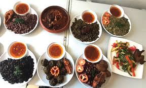
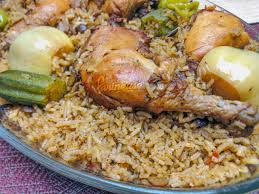
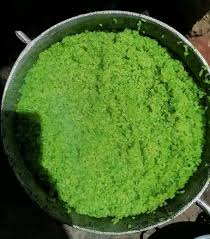
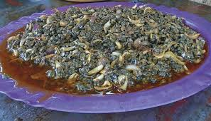
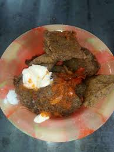
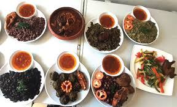
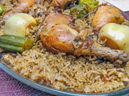
Sites Touristiques
Explorez les différents sites touristiques de notre ville Bobo Dioulasso.


Les masques de Bobo-Dioulasso
Explorez la tradition bobo à travers ces masques
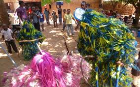
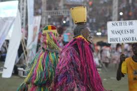
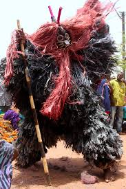
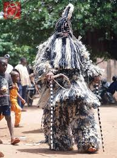
 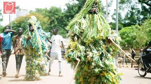
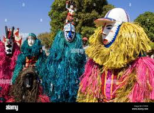
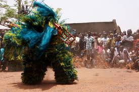
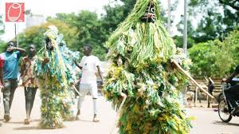
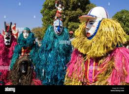
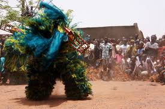
 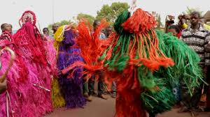
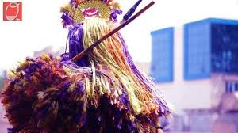
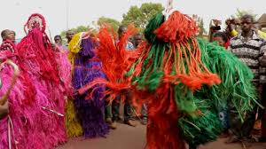
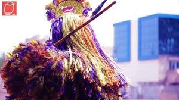

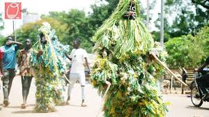
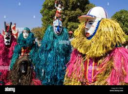
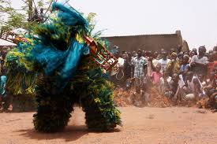
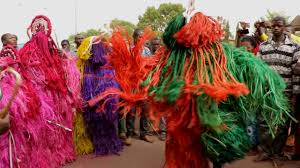
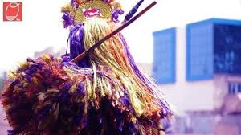